flowchart LR
PC[PC / Jetson] -->|USB Type-C / serial| BASIC[Basic / Screen / Transponder]
BASIC --> PICO[Pico / Master Control]
PICO --> SERVO[8 digital servos]
BASIC --> ATOM[Atom / Tool end]
ATOM --> TOOL[LED / button / tool IO / gripper interface]
Hiện trạng phần cứng, thông số kỹ thuật và động học của MyArm Master 750
reference
myarm
myarm-master-750
hardware
kinematics
urdf
xacro
specification
analysis
Tài liệu này phản ánh hiện trạng hiện tại của thống số kỹ thuật phần cứng đối chiếu spec, MDH, joint limits, encoder limits và URDF/Xacro của MyArm Master 750 theo docs, Python SDK và ROS2 SDK.
Thống nhất và chuyển đổi đơn vị
\[ q_i[\mathrm{rad}] = \frac{\pi}{180}q_i[^\circ], \qquad x[\mathrm{m}] = 10^{-3}x[\mathrm{mm}] \tag{1}\]
Spec phần cứng trong docs
| Nhóm | Giá trị chuẩn hóa | Ghi chú kỹ thuật |
|---|---|---|
| DOF | \(6+1\) joint | 6 joint arm chính + 1 joint/gripper phụ theo docs. |
| Reach ngang | \(0.750~\mathrm{m}\) \(750~\mathrm{mm}\) |
Reach danh nghĩa, không tự chứng minh toàn bộ orientation reachable. |
| Span tổng | \(1.500~\mathrm{m}\) \(1500~\mathrm{mm}\) |
Gần bằng 2 lần reach ngang. |
| Self-weight | \(3.2~\mathrm{kg}\) | Theo docs zip. |
| Nguồn | \(24~\mathrm{V},\;9.2~\mathrm{A}\) | Nguồn DC danh nghĩa trong docs product parameters. |
| Repeatability | \([-0.001, 0.001]~\mathrm{m}\) \([-1, 1]~\mathrm{mm}\) |
Giá trị này phản ánh khả năng lặp lại một vị trí trong điều kiện tương tự |
| Accuracy | \([0.005, 0.008]~\mathrm{m}\) \([5, 8]~\mathrm{mm}\) |
Phản ánh sai khác tuyệt đối |
| Payload rated | \(0.5~\mathrm{kg}\) \(500~\mathrm{g}\) |
Sức nâng, chịu tải hiệu dung, trung bình |
| Payload peak | \(1.0~\mathrm{kg}\) \(1000~\mathrm{g}\) |
Chịu tải lớn nhất trong 1 thời gian ngắn |
| Servo count | \(8\) servo | Nhiều hơn 6 joint arm vì gồm tool/gripper/extra servo. |
| Communication frame rate | \(>50~\mathrm{Hz}\) | Frame rate giao tiếp công bố, không phải closed-loop frequency. |
Dữ liệu nguồn: assets/tables/hardware_spec_summary.csv.
Mạch điện, I/O, và các cụm xử lý chuyên biệt
Docs base interface ghi có Type-C, screen, phím A/B/C, power switch, DC/IO, emergency stop, 6 input và 6 output. Input được ghi là NPN, output là PNP. Base có các đường IN1 đến IN6, OUT1 đến OUT6, 24V, GND và emergency-stop interface.
End-effector side có Atom, LED/button, tool IO, Grove interface, Type-C và servo interface. Các chân end IO trong docs gồm 5V0, GND, 3V3, G22, G19, G23, G33.
Mô hình động học MDH
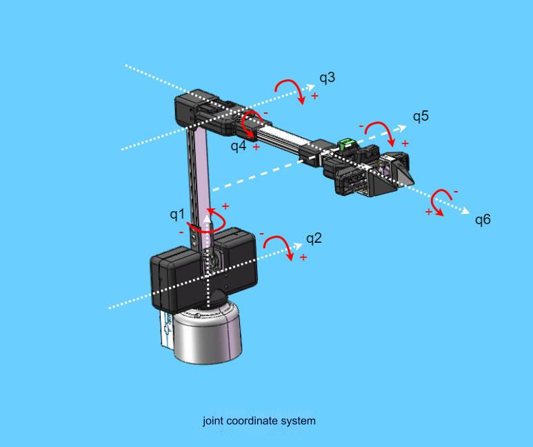
Joint arm chính được ký hiệu:
\[ q = [q_1,q_2,q_3,q_4,q_5,q_6]^\top \in \mathbb{R}^6 \tag{2}\]
Nếu source nhắc joint/gripper phụ, tài liệu ký hiệu là \(q_7\). Tuy nhiên trong URDF demo, gripper không phải revolute \(q_7\) mà là hai prismatic joints gripper và gripper_r.
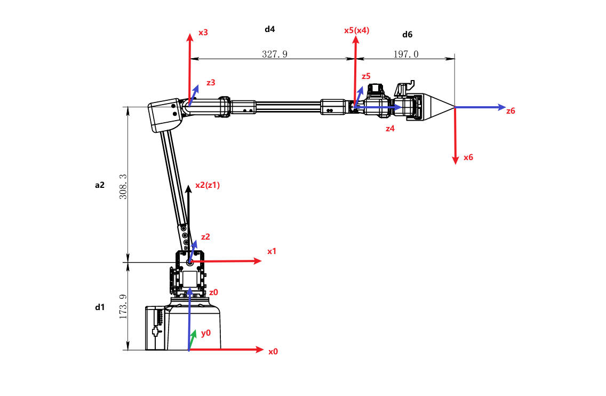
Nhà sản xuất công bố bảng Modified Denavit–Hartenberg dành cho 6 joint arm chính. Đặt \(\Delta_i\) là offset được docs ghi trong cột offset. Với modified DH, một cách viết phù hợp là:
\[ {}^{i-1}T_i(q_i) = R_x(\alpha_{i-1})T_x(a_{i-1})R_z(q_i+\Delta_i)T_z(d_i) \tag{3}\]
Trong đó:
\[ R_x(\alpha)= \begin{bmatrix} 1&0&0&0\\ 0&\cos\alpha&-\sin\alpha&0\\ 0&\sin\alpha&\cos\alpha&0\\ 0&0&0&1 \end{bmatrix}, \quad R_z(\theta)= \begin{bmatrix} \cos\theta&-\sin\theta&0&0\\ \sin\theta&\cos\theta&0&0\\ 0&0&1&0\\ 0&0&0&1 \end{bmatrix} \tag{4}\]
\[ T_x(a)= \begin{bmatrix} 1&0&0&a\\ 0&1&0&0\\ 0&0&1&0\\ 0&0&0&1 \end{bmatrix}, \quad T_z(d)= \begin{bmatrix} 1&0&0&0\\ 0&1&0&0\\ 0&0&1&d\\ 0&0&0&1 \end{bmatrix} \tag{5}\]
| Joint | \(\alpha_{i-1}\) | \(a_{i-1}\) | \(d_i\) | \(\theta\) | \(\Delta_i\) |
|---|---|---|---|---|---|
| \(q_1\) | \(0.000~\mathrm{rad}\) \(0~^\circ\) |
\(0.000~\mathrm{m}\) \(0~\mathrm{mm}\) |
\(0.174~\mathrm{m}\) \(173.9~\mathrm{mm}\) |
\(\theta_1\) | \(0.000~\mathrm{rad}\) \(0~^\circ\) |
| \(q_2\) | \(-1.571~\mathrm{rad}\) \(-90~^\circ\) |
\(0.000~\mathrm{m}\) \(0~\mathrm{mm}\) |
\(0.000~\mathrm{m}\) \(0~\mathrm{mm}\) |
\(\theta_2\) | \(-1.571~\mathrm{rad}\) \(-90~^\circ\) |
| \(q_3\) | \(0.000~\mathrm{rad}\) \(0~^\circ\) |
\(0.308~\mathrm{m}\) \(308.315~\mathrm{mm}\) |
\(0.000~\mathrm{m}\) \(0~\mathrm{mm}\) |
\(\theta_3\) | \(0.000~\mathrm{rad}\) \(0~^\circ\) |
| \(q_4\) | \(-1.571~\mathrm{rad}\) \(-90~^\circ\) |
\(0.000~\mathrm{m}\) \(0~\mathrm{mm}\) |
\(0.328~\mathrm{m}\) \(327.91~\mathrm{mm}\) |
\(\theta_4\) | \(0.000~\mathrm{rad}\) \(0~^\circ\) |
| \(q_5\) | \(1.571~\mathrm{rad}\) \(90~^\circ\) |
\(0.000~\mathrm{m}\) \(0~\mathrm{mm}\) |
\(0.000~\mathrm{m}\) \(0~\mathrm{mm}\) |
\(\theta_5\) | \(0.000~\mathrm{rad}\) \(0~^\circ\) |
| \(q_6\) | \(-1.571~\mathrm{rad}\) \(-90~^\circ\) |
\(0.000~\mathrm{m}\) \(0~\mathrm{mm}\) |
\(0.197~\mathrm{m}\) \(197.1~\mathrm{mm}\) |
\(\theta_6\) | \(3.142~\mathrm{rad}\) \(180~^\circ\) |
Dữ liệu nguồn: assets/tables/mdh_parameters_normalized.csv.
Forward kinematics của chain 6R theo bảng này là:
\[ {}^0T_6(q) = \prod_{i=1}^{6}{}^{i-1}T_i(q_i) \tag{6}\]
Việc source docs có MDH không đồng nghĩa URDF/Xacro đang dùng cùng frame convention. URDF biểu diễn bằng origin xyz/rpy và axis, còn MDH biểu diễn bằng các frame liên tiếp có quy tắc riêng. Muốn chứng minh tương đương phải tính \({}^0T_6(q)\) từ cả hai mô hình tại cùng \(q\) và so ma trận biến đổi.
6. URDF/Xacro: đơn vị và giới hạn
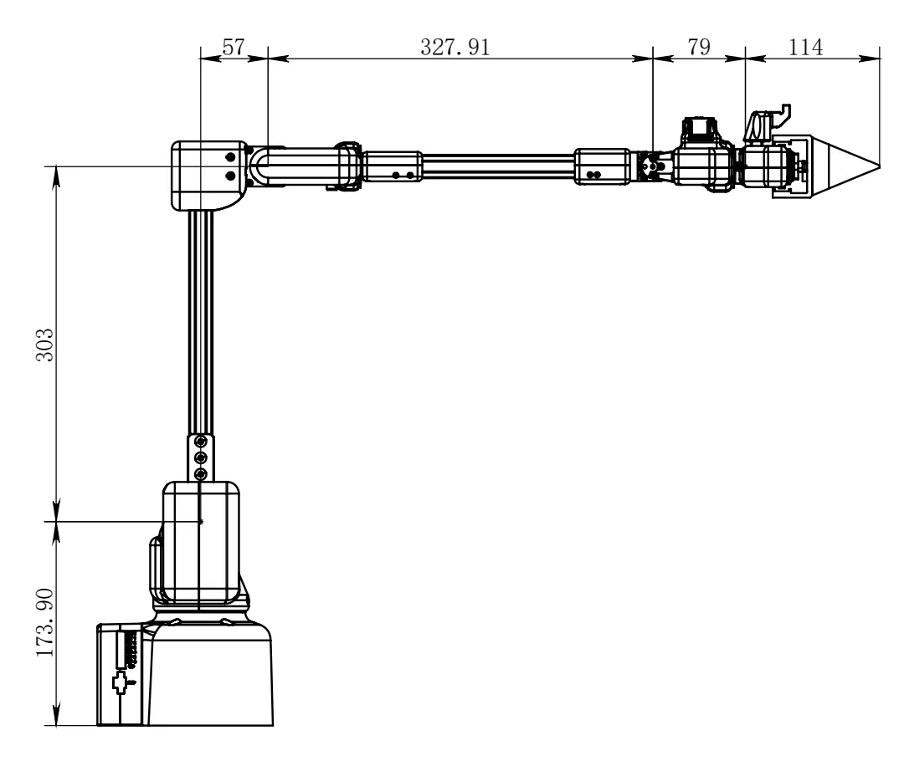
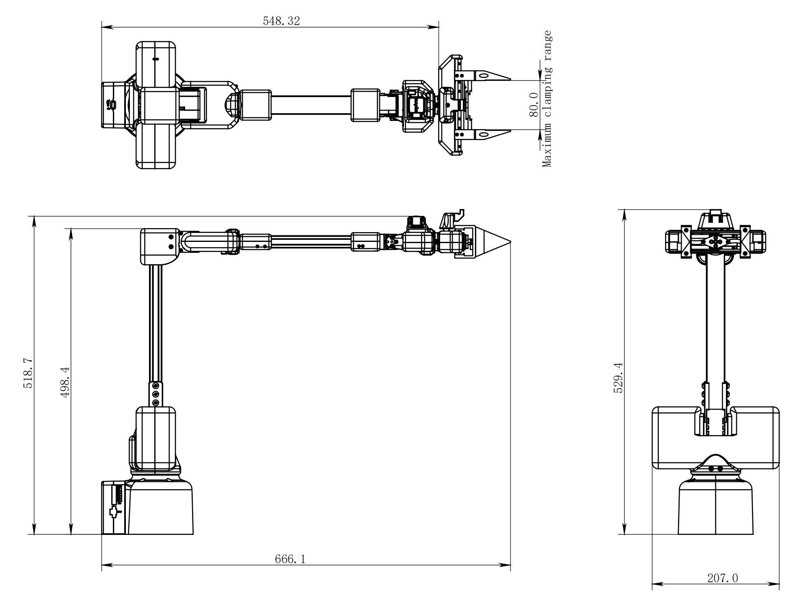
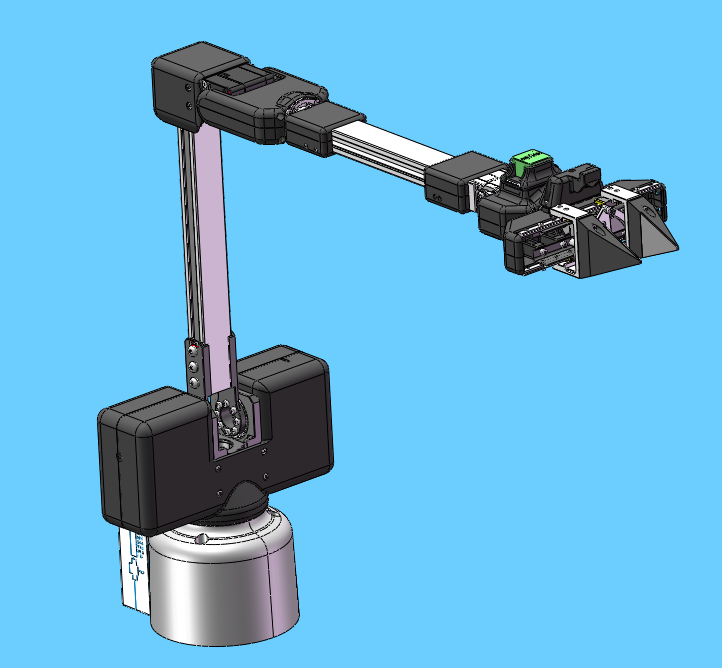
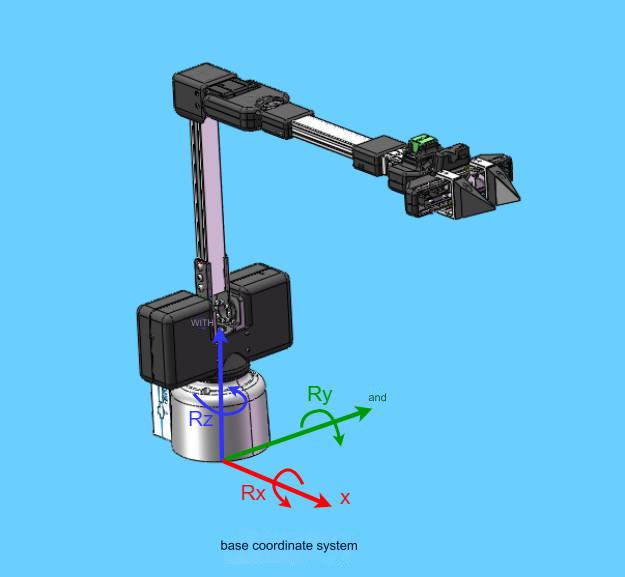
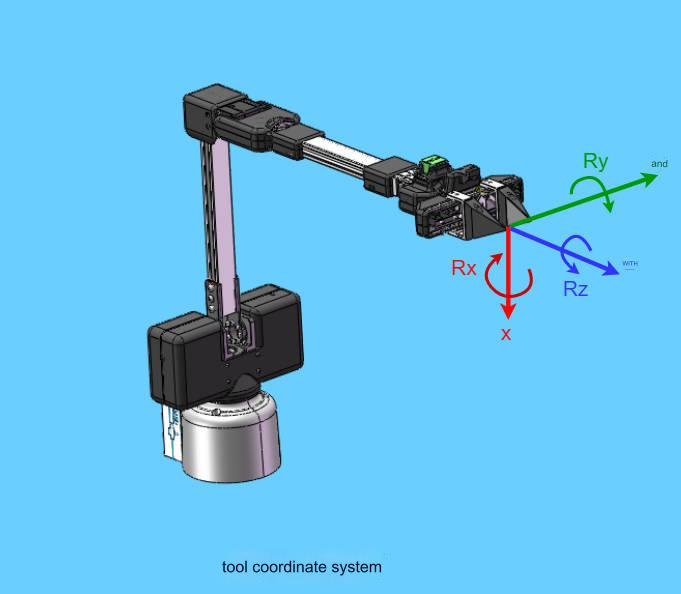
URDF/Xacro dùng xyz theo m, rpy theo rad, revolute limit lower/upper theo rad, prismatic limit lower/upper theo m.
| Joint URDF | Type | Miền giá trị | Ghi chú đơn vị |
|---|---|---|---|
| joint1 | revolute | \([-3.037, 2.915]~\mathrm{rad}\) \([-173.996, 167]~^\circ\) |
URDF và JointState dùng rad. |
| joint2 | revolute | \([-1.606, 1.623]~\mathrm{rad}\) \([-92, 93.003]~^\circ\) |
URDF và JointState dùng rad. |
| joint3 | revolute | \([-1.440, 1.650]~\mathrm{rad}\) \([-82.512, 94.549]~^\circ\) |
URDF và JointState dùng rad. |
| joint4 | revolute | \([-2.967, 2.967]~\mathrm{rad}\) \([-170.002, 170.002]~^\circ\) |
URDF và JointState dùng rad. |
| joint5 | revolute | \([-1.675, 1.553]~\mathrm{rad}\) \([-95.999, 88.998]~^\circ\) |
URDF và JointState dùng rad. |
| joint6 | revolute | \([-2.967, 2.967]~\mathrm{rad}\) \([-170.002, 170.002]~^\circ\) |
URDF và JointState dùng rad. |
| gripper | prismatic | \([0.000, 0.035]~\mathrm{m}\) \([0.0, 34.5]~\mathrm{mm}\) |
URDF dùng m; tương ứng 34.5 mm. |
| gripper_r | prismatic | \([0.000, 0.060]~\mathrm{m}\) \([0.0, 60.0]~\mathrm{mm}\) |
URDF dùng m; tương ứng 60.0 mm. |
Dữ liệu nguồn: assets/tables/ros2_urdf_joint_limits_normalized.csv.
Điểm kỹ thuật nổi bật: URDF gripper và gripper_r là prismatic, trong khi Python SDK/docs lại có các bảng nói tới joint/servo 7 và servo 8 theo raw encoder/potential. Không có ánh xạ một-một hiển nhiên giữa \(q_7[^\circ]\) trong firmware table và displacement gripper/gripper_r trong URDF.
7. Đối chiếu joint limits
| Joint | Docs Shake trước 13/06/2025 | Docs Shake sau 13/06/2025 | Docs Coordinate | SDK MyArmM |
SDK MyArmMControl |
ROS2 URDF/Xacro |
|---|---|---|---|---|---|---|
| \(q_1\) | \([-2.967, 2.967]~\mathrm{rad}\) \([-170, 170]~^\circ\) |
\([-2.880, 2.880]~\mathrm{rad}\) \([-165, 165]~^\circ\) |
\([-2.880, 2.880]~\mathrm{rad}\) \([-165, 165]~^\circ\) |
\([-2.880, 2.880]~\mathrm{rad}\) \([-165, 165]~^\circ\) |
\([-2.880, 2.880]~\mathrm{rad}\) \([-165, 165]~^\circ\) |
\([-3.037, 2.915]~\mathrm{rad}\) \([-173.996, 167]~^\circ\) |
| \(q_2\) | \([-1.449, 1.449]~\mathrm{rad}\) \([-83, 83]~^\circ\) |
\([-1.396, 1.745]~\mathrm{rad}\) \([-80, 100]~^\circ\) |
\([-1.396, 1.745]~\mathrm{rad}\) \([-80, 100]~^\circ\) |
\([-1.047, 1.658]~\mathrm{rad}\) \([-60, 95]~^\circ\) |
\([-1.396, 1.745]~\mathrm{rad}\) \([-80, 100]~^\circ\) |
\([-1.606, 1.623]~\mathrm{rad}\) \([-92, 93.003]~^\circ\) |
| \(q_3\) | \([-1.571, 1.466]~\mathrm{rad}\) \([-90, 84]~^\circ\) |
\([-1.745, 1.396]~\mathrm{rad}\) \([-100, 80]~^\circ\) |
\([-1.745, 1.396]~\mathrm{rad}\) \([-100, 80]~^\circ\) |
\([-1.571, 1.309]~\mathrm{rad}\) \([-90, 75]~^\circ\) |
\([-1.745, 1.396]~\mathrm{rad}\) \([-100, 80]~^\circ\) |
\([-1.440, 1.650]~\mathrm{rad}\) \([-82.512, 94.549]~^\circ\) |
| \(q_4\) | \([-2.705, 2.670]~\mathrm{rad}\) \([-155, 153]~^\circ\) |
\([-2.793, 2.793]~\mathrm{rad}\) \([-160, 160]~^\circ\) |
\([-2.793, 2.793]~\mathrm{rad}\) \([-160, 160]~^\circ\) |
\([-2.618, 2.618]~\mathrm{rad}\) \([-150, 150]~^\circ\) |
\([-2.793, 2.793]~\mathrm{rad}\) \([-160, 160]~^\circ\) |
\([-2.967, 2.967]~\mathrm{rad}\) \([-170.002, 170.002]~^\circ\) |
| \(q_5\) | \([-1.588, 1.536]~\mathrm{rad}\) \([-91, 88]~^\circ\) |
\([-1.571, 2.094]~\mathrm{rad}\) \([-90, 120]~^\circ\) |
\([-1.571, 2.094]~\mathrm{rad}\) \([-90, 120]~^\circ\) |
\([-1.588, 1.536]~\mathrm{rad}\) \([-91, 88]~^\circ\) |
\([-1.571, 2.094]~\mathrm{rad}\) \([-90, 120]~^\circ\) |
\([-1.675, 1.553]~\mathrm{rad}\) \([-95.999, 88.998]~^\circ\) |
| \(q_6\) | \([-2.670, 2.670]~\mathrm{rad}\) \([-153, 153]~^\circ\) |
\([-3.142, 3.142]~\mathrm{rad}\) \([-180, 180]~^\circ\) |
\([-3.142, 3.142]~\mathrm{rad}\) \([-180, 180]~^\circ\) |
\([-2.618, 2.618]~\mathrm{rad}\) \([-150, 150]~^\circ\) |
\([-3.142, 3.142]~\mathrm{rad}\) \([-180, 180]~^\circ\) |
\([-2.967, 2.967]~\mathrm{rad}\) \([-170.002, 170.002]~^\circ\) |
| \(q_7\) / gripper | \([-2.059, 0.035]~\mathrm{rad}\) \([-118, 2]~^\circ\) |
\([-2.059, 0.035]~\mathrm{rad}\) \([-118, 2]~^\circ\) |
không liệt kê | \([-2.059, 0.035]~\mathrm{rad}\) \([-118, 2]~^\circ\) |
\([-2.059, 0.035]~\mathrm{rad}\) \([-118, 2]~^\circ\) |
URDF: prismatic gripper không phải góc \(q_7\) |
Dữ liệu nguồn: assets/tables/joint_limit_crosscheck_normalized.csv.
Warning
Hiện tại đang có nhiều số liệu và thống số không đòng nhất với nhau - MyArmM trong SDK giữ limit hẹp hơn docs Shake mới ở \(q_2\) đến \(q_6\). - MyArmMControl khớp docs Coordinate ở \(q_1\) đến \(q_6\), nhưng robot_info.py vẫn chứa giá trị thứ 7 trong angles_min/max dù joint_id của MyArmMControl chỉ liệt kê 6 joint. - URDF/Xacro có miền riêng, ví dụ joint6 là \([-2.967,2.967]~\mathrm{rad}\) / \([-170,170]~^\circ\), trong khi docs Coordinate là \([-3.142,3.142]~\mathrm{rad}\) / \([-180,180]~^\circ\).
8. Đối chiếu encoder/potential limits
Encoder/potential là raw count.
| Servo | Docs Shake trước 13/06/2025 | Docs Shake sau 13/06/2025 | SDK MyArmM |
SDK MyArmMControl |
|---|---|---|---|---|
| S1 | \([114,3981]\) | \([175,3910]\) | \([114,3981]\) | \([137,4004]\) |
| S2 | \([1200,2991]\) | \([1370,3120]\) | \([1200,2991]\) | \([1163,2945]\) |
| S3 | \([1200,2991]\) | \([1370,3120]\) | \([1200,2991]\) | \([1035,3079]\) |
| S4 | \([1024,3002]\) | \([1015,2890]\) | \([1024,3002]\) | \([1013,3026]\) |
| S5 | \([286,3788]\) | \([350,3740]\) | \([286,3788]\) | \([248,3724]\) |
| S6 | \([1013,3048]\) | \([1013,3048]\) | \([1013,3048]\) | \([979,2994]\) |
| S7 | \([307,3788]\) | \([350,3740]\) | \([307,3788]\) | \([220,3704]\) |
| S8 | \([706,2068]\) | \([706,2068]\) | \([706,2068]\) | \([706,2048]\) |
Dữ liệu nguồn: assets/tables/encoder_limit_crosscheck.csv.
Hiện trạng đáng chú ý: MyArmM SDK trùng với bảng Shake trước 13/06/2025, không trùng bảng Shake mới; MyArmMControl có bộ encoder/potential riêng và không trùng hoàn toàn với cả hai bảng Shake docs.
9. Tổng hợp trạng thái của hiện tại
- Docs có spec cơ khí/điện/MDH/joint limits/encoder limits, nhưng không cung cấp đầy đủ phương pháp đo accuracy/repeatability hoặc payload curve.
- Python SDK có bảng validation riêng trong
robot_info.py, và bảng này không đồng nhất giữaMyArmMvàMyArmMControl. - ROS2 URDF/Xacro dùng rad/m và có joint limits khác docs/SDK.
- MDH docs và URDF không thể xem là tương đương nếu chưa chứng minh bằng FK tại cùng \(q\).
- Encoder/potential raw count không thể tự động diễn giải thành góc nếu thiếu calibration map.
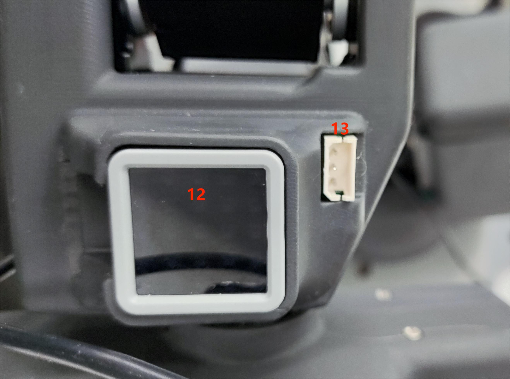
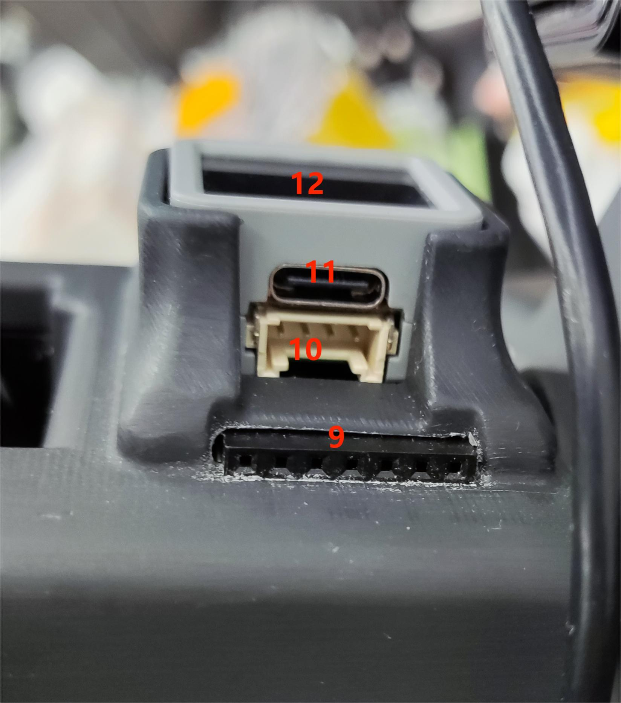
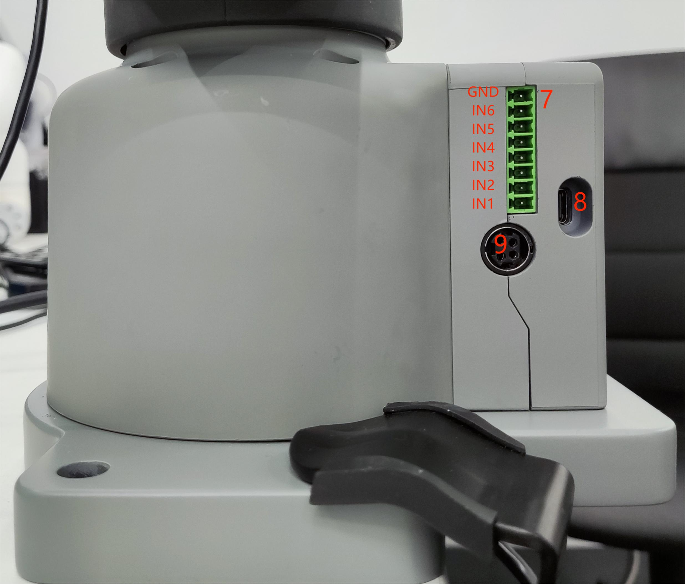
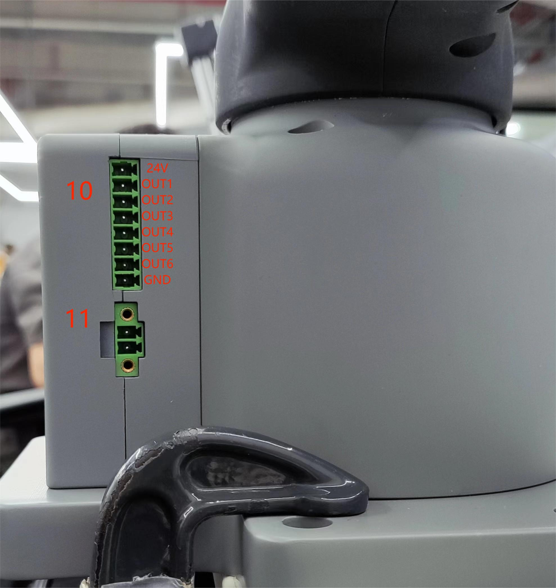
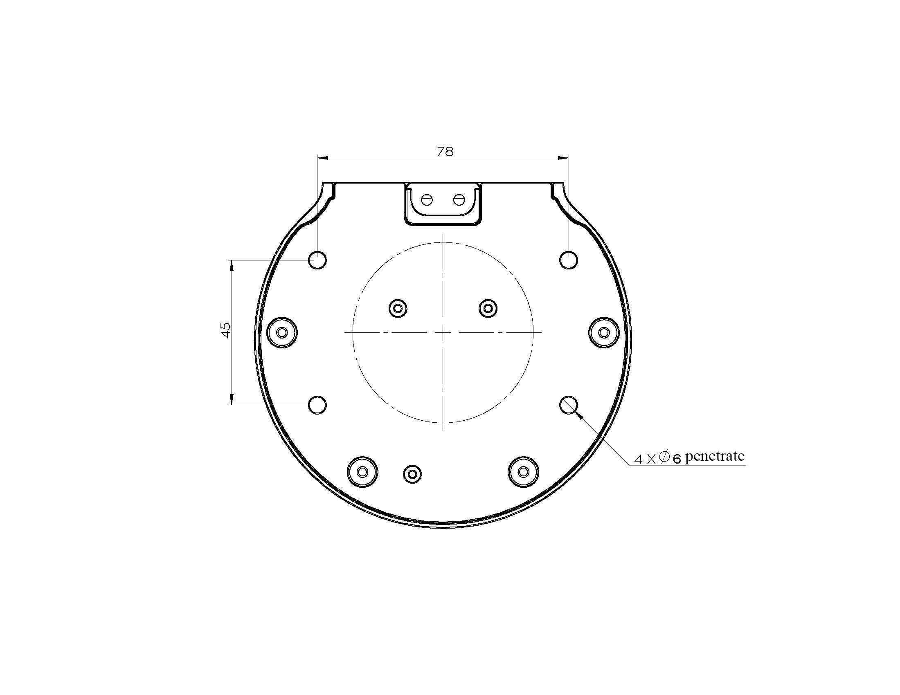
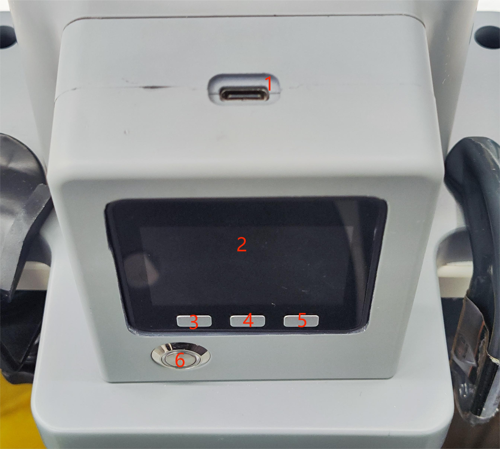
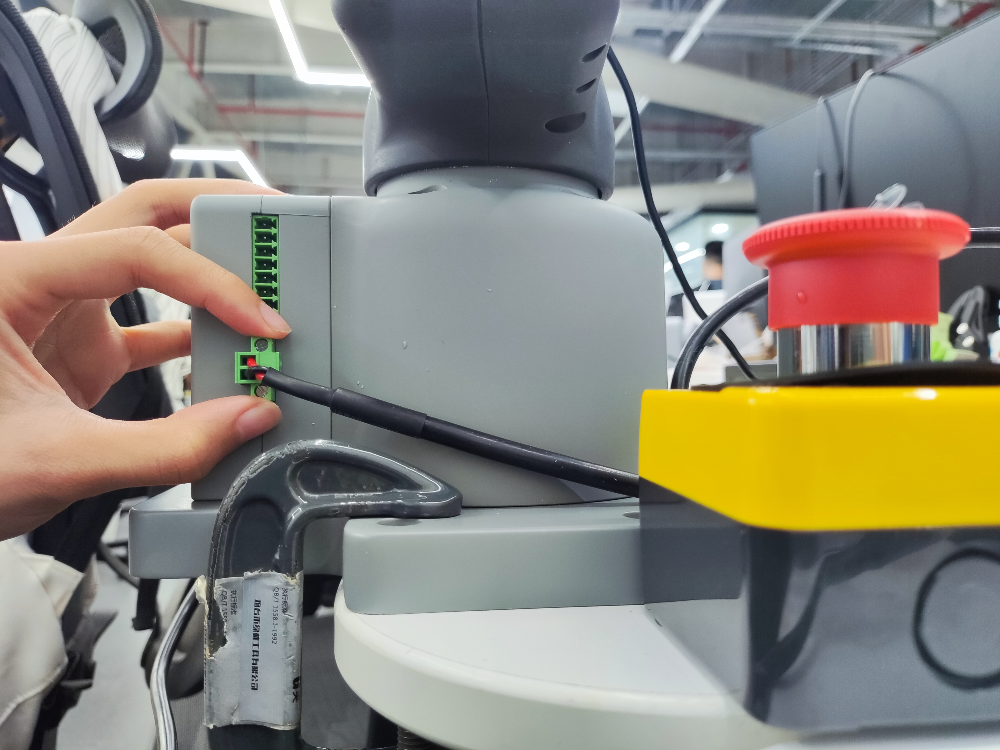
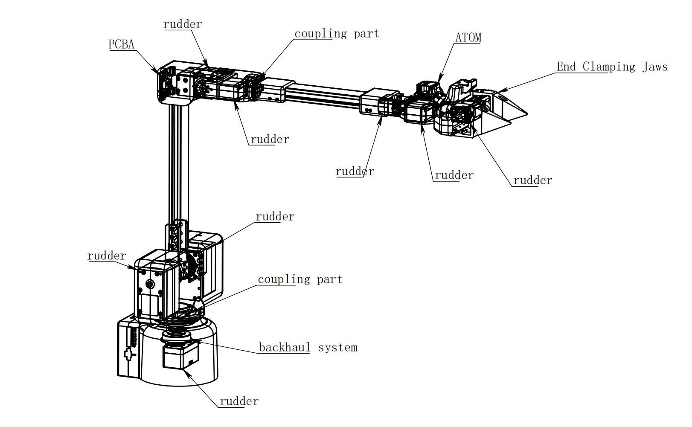
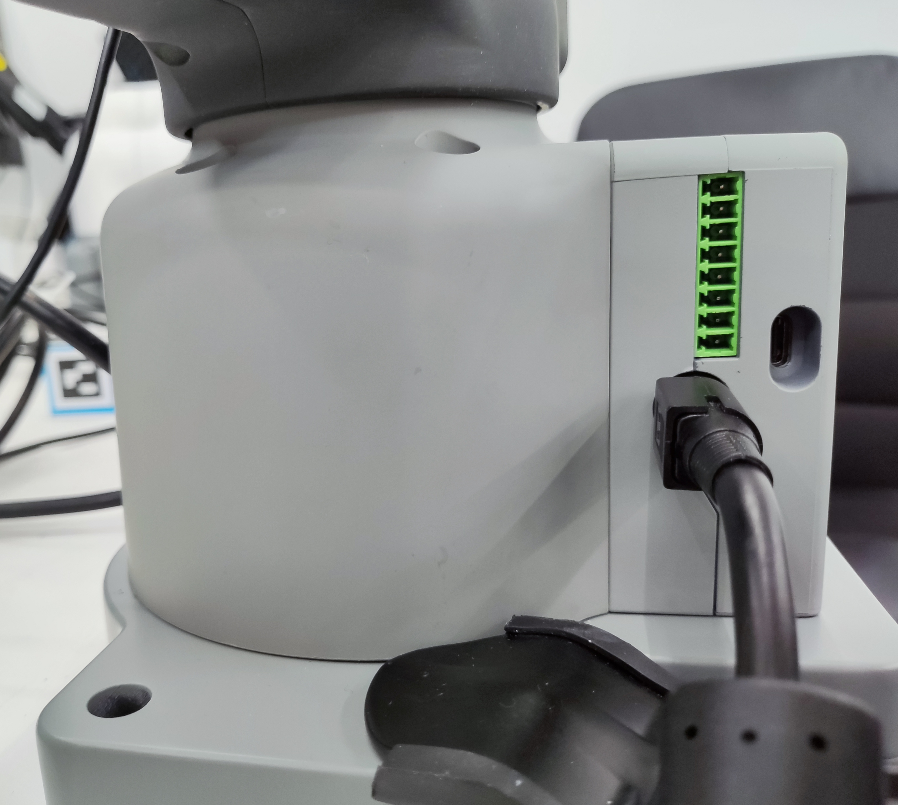
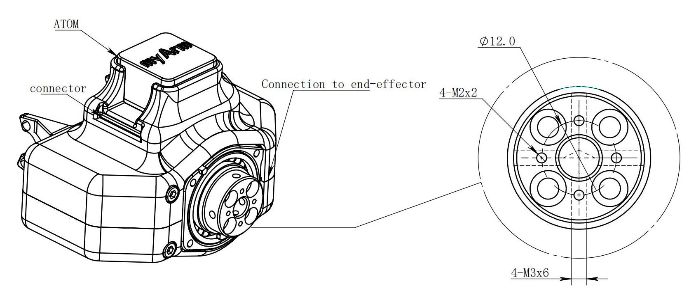
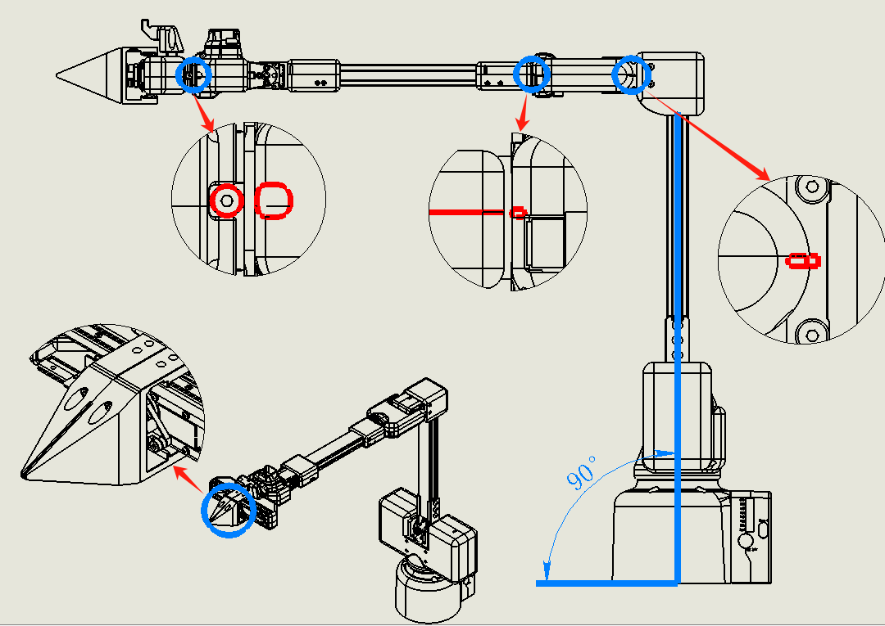
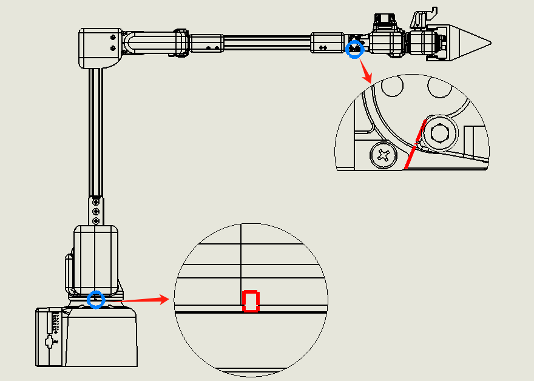
Phụ lục v0.0.6: đọc URDF/Xacro như một mô hình động học riêng
Bản v0.0.6 bổ sung bảng phân tích URDF chi tiết ở ../elephant-robotics-myarm-master-750-analysis-ros2-sdk-specification/index.qmd. Điểm quan trọng nhất là URDF không phải bảng MDH; mỗi joint URDF có dạng:
\[ {}^{P_i}T_{C_i}(q_i)=T(x_i,y_i,z_i)R_{rpy}(r_i,p_i,y_i)R_z(q_i) \tag{7}\]
trong khi MDH docs dùng:
\[ {}^{i-1}T_i(q_i)=R_x(\alpha_{i-1})T_x(a_{i-1})R_z(q_i+\Delta_i)T_z(d_i) \tag{8}\]
Vì vậy việc đối chiếu cần dùng FK chain hoặc tool kiểm chứng transform, không chỉ so từng số origin xyz/rpy với từng hàng MDH. Bảng joint URDF được xuất ra tại assets/tables/ros2_urdf_joint_model_v006.csv để giữ dấu vết source-level.